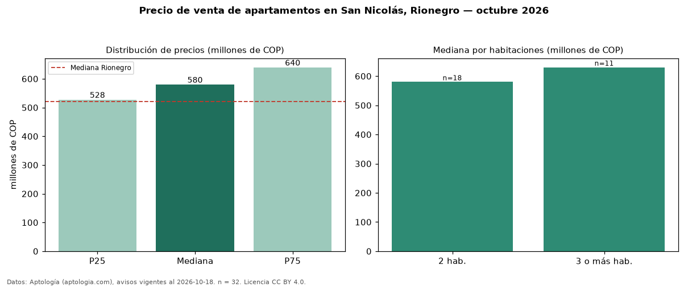

Precio de venta de apartamentos en San Nicolás, Rionegro — octubre 2026
En San Nicolás, Rionegro, la mediana de precio de venta de apartamentos es COP 580 millones, según 32 avisos vigentes. Eso es 12 % por encima de la mediana de Rionegro para apartamentos (COP 520 millones). Por metro cuadrado, la mediana es COP 8,37 millones/m² (n = 32 avisos con área), 13 % por encima de Rionegro (COP 7,44 millones/m²). Con el precio por m² de arriendo del mismo segmento (COP 40.000/m² al mes), la rentabilidad bruta implícita es 5,7 % anual (aproximación con medianas de ofertas distintas). El área mediana anunciada es 68 m². El segmento con más oferta es el de 2 habitaciones (18 avisos, mediana COP 580 millones); pasar de 2 habitaciones a 3 o más habitaciones cambia la mediana +9 %. La administración mediana declarada es COP 250.000 al mes (n = 19). Por precio mediano es el puesto 6 de 18 barrios de Rionegro con al menos 30 avisos de apartamentos en venta (COP): en la franja media. Datos: Aptología (aptologia.com), CC BY 4.0 — https://www.aptologia.com/venta/rionegro/san-nicolas. Archivos: PDF, CSV con las cifras y gráfica PNG.

| Avisos únicos | 32 |
|---|---|
| Percentil 25 | COP 527.500.000 |
| Mediana | COP 580.000.000 |
| Percentil 75 | COP 639.750.000 |
| Mediana por m² | COP 8.368.606 |
Fuente: avisos vigentes de portales inmobiliarios recopilados por Aptología, deduplicados (mínimo 30 avisos únicos por celda). Precios pedidos, no cerrados. Fecha: 2026-10-18.